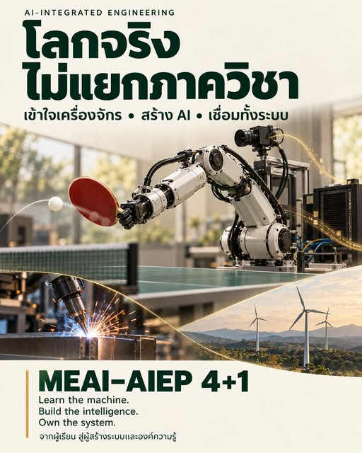

โลกจริงไม่แยกภาควิชา: MEAI–AIEP กับการรับผิดชอบทั้งระบบ


โลกจริงไม่แยกภาควิชา หุ่นยนต์ตีปิงปองหนึ่งครั้งต้องมองเห็นลูก ประเมินความเร็วและการหมุน ตัดสินใจว่าจะตีอย่างไร แล้วขยับแขนให้ทัน ภายใต้ข้อจำกัดของแรง ความเฉื่อย มอเตอร์ และเวลา ต่อให้โมเดลคำนวณคำตอบได้ดี หากมอเตอร์ทำตามไม่ได้หรือคิดเสร็จช้าเกินไป ระบบก็ยังทำงานไม่สำเร็จ
รอยต่อระหว่าง รู้ว่าควรทำอะไร กับ ทำได้จริง เป็นโจทย์ของ AI-Integrated Engineering หรือ AIEP ที่เรากำลังพัฒนา ผมอยากชวนนิสิตเห็นตั้งแต่ปีแรกว่าความรู้ในสาขาของตนกับ AI ต้องเชื่อมกันอย่างไร จึงจะสร้างระบบที่ทำงานกับโลกจริงได้
ยิ่ง AI ลงมือกับโลกจริง พื้นฐานเครื่องกลยิ่งสำคัญ
สำหรับนิสิตปี 1 วิศวกรรมเครื่องกล หลักสูตรนานาชาติ มหาวิทยาลัยเกษตรศาสตร์ พื้นฐานที่กำลังจะเรียน ทั้งกลศาสตร์ พลศาสตร์ ความร้อน ของไหล การออกแบบ และการควบคุม ล้วนเป็นฐานในการทำความเข้าใจเครื่องจักรและข้อจำกัดของมัน
เมื่อ AI สั่งการเครื่องจักร คำสั่งนั้นจะเปลี่ยนสภาวะของเครื่อง และสภาวะใหม่ก็ย้อนกลับมาเป็นข้อมูลสำหรับการตัดสินใจครั้งต่อไป เราจึงต้องเข้าใจ วงจรการทำงานทั้งระบบ ตั้งแต่การวัด การเรียนรู้ การตัดสินใจ การลงแรง ไปจนถึงการตรวจสอบผลและความปลอดภัย
ต้องลงลึกสองแกน และฝึกเชื่อมด้วยงานจริง
ฝั่งเครื่องกลต้องเข้าใจว่าเครื่องทำงานอย่างไรและมีข้อจำกัดตรงไหน ส่วนฝั่ง AI ต้องประเมินว่าข้อมูลเชื่อถือได้เพียงใด โมเดลเรียนรู้อะไร ผิดเมื่อไร และควรดูแลอย่างไรเมื่อสภาพการใช้งานเปลี่ยนไป
งานที่เชื่อมสองด้านเข้าด้วยกันคือ การออกแบบการทดลอง การนำโมเดลไปเชื่อมกับเครื่องจักร และการยืนยันว่าทั้งระบบทำงานได้ตามที่ตั้งใจ ความลึกของแต่ละศาสตร์จึงต้องพัฒนาไปพร้อมกับประสบการณ์จากการลงมือทำ
พัฒนาโมเดลได้ ต้องอธิบายความผิดพลาดและดูแลการใช้งานได้ด้วย
โครงสร้างการเรียนที่เรากำลังวางให้ความสำคัญกับสามความสามารถที่ต้องไปด้วยกัน คือ พัฒนาโมเดลได้ ประเมินและอธิบายความผิดพลาดได้ และนำโมเดลลงระบบจริงพร้อมติดตามปรับปรุงได้
การเรียนจึงต้องพาไปถึงการรับผิดชอบผลที่เกิดขึ้นเมื่อโมเดลทำงานกับเครื่องจักร ทั้งในวันที่ผลเป็นไปตามคาดและในวันที่สภาพการใช้งานเปลี่ยนไป การเข้าใจข้อจำกัดและตรวจสอบการทำงานเป็นส่วนหนึ่งของความสามารถที่ต้องฝึก
โจทย์เครื่องกลเชื่อมกับ AI ได้ตลอดวงจรงาน
ตัวอย่างงานวิจัยที่ผมเตรียมไว้ประกอบการพูดคุยมีทั้งโดรนแข่ง หุ่นยนต์เล่นกีฬา อุปกรณ์ช่วยการเคลื่อนไหว ระบบเตือนก่อนรอยเชื่อมเสีย การจัดผังกังหันลม และการควบคุมของไหล อยากให้นิสิตเห็นว่า AI เชื่อมกับเครื่องกลได้ตั้งแต่การออกแบบ การผลิต และการบำรุงรักษา ไปจนถึงพลังงานและระบบที่ทำงานร่วมกับมนุษย์
คำถามที่อยากให้เริ่มคิดคือ เราเข้าใจปัญหาอะไรลึกพอ และอยากสร้างระบบอะไรให้ทำได้ดีขึ้น คำถามนี้จะช่วยเชื่อมความสนใจของผู้เรียนกับความรู้และประสบการณ์ที่ต้องสะสม
เส้นทาง 4+1 ต้องเริ่มสะสมความลึกตั้งแต่ปีแรก
เส้นทาง MEAI–AIEP 4+1 ที่เรากำลังพัฒนาตั้งใจให้ผู้เรียนค่อย ๆ เติบโตจากพื้นฐานเครื่องกลและ AI ไปสู่โครงงานที่เชื่อมสองศาสตร์ แล้วต่อยอดเป็นงานวิจัยระดับปริญญาโท ความลึกทั้งสองด้านต้องใช้เวลา รวมถึงเวลาทดลอง พบสิ่งที่ไม่เป็นไปตามคาด และกลับมาทำความเข้าใจใหม่
ผมตั้งใจจะไปคุยกับหลักสูตรต่าง ๆ ต่อ เพื่อช่วยกันออกแบบว่าแต่ละศาสตร์ควรเชื่อมกับ AI ตรงไหน ต้องสร้างพื้นฐานอะไร และจะพานิสิตไปสู่การสร้างระบบและองค์ความรู้ใหม่อย่างไร
Learn the machine. Build the intelligence. Own the system. เข้าใจเครื่องจักร สร้างความสามารถในการเรียนรู้ และรับผิดชอบการทำงานของทั้งระบบ คือแนวทางของคนที่เราอยากช่วยกันสร้าง
การพูดคุยตามโพสต์กำหนดไว้วันที่ 14 ตุลาคม 2569 เวลา 12.00–13.00 น. ณ ห้อง 5404 ชั้น 4 อาคาร 5 วิศวกรรมเครื่องกล สำหรับนิสิตปี 1 เครื่องกลนานาชาติ รหัส 69